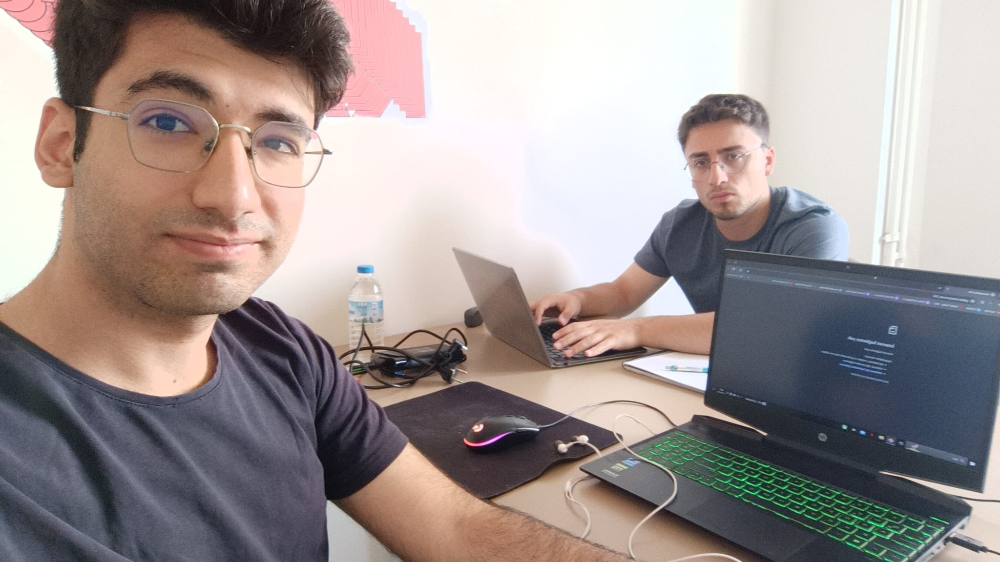

Ferhat Köknar
Gruptaki her kötü işin sonunda bağlandığı kişi. Barda’daki Selim, Samurai Jack’deki Aku, Ben 10 daki Vilgax. Ferhat tam bir suç makinesi. Almış olduğumuz ses kayıtlarına dayanarak uyuşturucu ticareti, adam dolandırma, vatana ihanet, aktif ırkçılık, taciz, cinsel taciz, adam alıkoyma, hakaret ve küfrün her türlüsü, dini değerlere hakaret, Atatürk’ü koruma kanununa karşı gelme, beyaz kadın ticareti ve daha doğrulayamadığımız pek çok suçla ilişkisi olduğunu söyleyebiliriz. Bu kadar suçla ilişkili olupta kendini nasıl daha önce ele vermediğini bilmiyoruz.
Gruptaki her kötü işin sonunda bağlandığı kişi. Barda’daki Selim, Samurai Jack’deki Aku, Ben 10 daki Vilgax. Ferhat tam bir suç makinesi. Almış olduğumuz ses kayıtlarına dayanarak uyuşturucu ticareti, adam dolandırma, vatana ihanet, aktif ırkçılık, taciz, cinsel taciz, adam alıkoyma, hakaret ve küfrün her türlüsü, dini değerlere hakaret, Atatürk’ü koruma kanununa karşı gelme, beyaz kadın ticareti ve daha doğrulayamadığımız pek çok suçla ilişkisi olduğunu söyleyebiliriz. Bu kadar suçla ilişkili olupta kendini nasıl daha önce ele vermediğini bilmiyoruz.
Kendisinden beklenildiği gibi peşmerge kıyafetleri ile
Çeşitli tahminlerimiz var bunlardan biri
şehirdeki en yakını Türker, Türker bu tip suçlardan uzak bir profil çizdiği için Ferhatı kamufle
ediyor olmalı. Ses dinleme cihazlarımızdan ve sokaktaki kamera ağına erişimimizden Ferhatla
alakalı daha fazla bilgi alabildik. Öncelikle Ferhat gruptaki herkesle iyi geçiniyor ve her
biriyle belirli aktiviteler gerçekleştirerek ilişkilerini taze tutuyor. Hamza ile grubun para
akışını inceliyor ve Mortal oynuyor. Mortal metaforunun ne olduğu hala daha büyük bi gizem.
Beyaz kadın ticaretiyle ilgili olabilir. Ashrah ve Mileena gibi egzotik kadın isimleri beyaz
kadın ticaretindeki bazı kişileri simgeliyor olabilir. Ama eğer böyleyse Hamza’nın niçin
Ashrah’tan nefret ettiğini de öğrenmemiz gerekir. Hamza ve Türker Ashrah’tan nefret ediyor.
Sürekli Ashrah’ın çok hızlı olduğundan ve bitmek bilmeyen kombolarından bahsediyorlar. Türker
Ashrah’a genelde *rospu diyor.
Ferhat grupla iyi geçinmesine rağmen oldukça tepki çekiyor. Serhat onu örgüt evini sürekli
meşgul etmesi sebebiyle evden kovacak noktaya dahil geldi. Ferhat’ın umrundaymış gibi
gözükmüyor. Herkese yukarıdan bakıyor ve laflarını ciddiye almamak suretiyle onlara haddini
bildiriyor. Erayla beraber grubun terör bağlantılarını oluşturan isimlerden bir diğeri. Bizzat
birinci dereceden akrabalarının dağda olduğunu sık sık vurguluyor, Atatürk’e asla saygı duymuyor
ve bunu da her fırsatta belirtiyor. Vatanı bölmek uğruna kanını bile satar, Türk kelimesinden
iğreniyor sürekli kürt milliyetçiliği yapıyor. Türk kadınlarına dair ağza alınmayacak sözler
kullanıyor. Özellikle İ.B isimli bi şahısa demediğini bırakmıyor, zavallı kız.
Boğazına da oldukça düşkün, Türkerle
beraber örgüt bütçesinin bi
bölümünü midesine ayırıyor, kötü yemekten nefret ediyor ve iki saat söyleniyor.Hatta bir
keresinde ekibimiz gizlice onları takip ederken bi dönerciye gittiklerini Ferhat'ın zurna dürüm
söylediği öğrenildi. Dönerler geldikten sonra Ferhat çok sinirlendi. "Zurnası buysa normali
nasıl *mına koyim" dediği öğrenildi. Türker bunu
bildiği için Ferhat’ın beslenmesi ile kişisel olarak ilgileniyor. Ferhat sebebi bilinmez bi
biçimde en çok Türker’e saygı duyuyor gibi gözüküyor, dediğim gibi ikilinin ilişkisini henüz
çözemediğimiz için bunun sebebini bilmiyoruz.
İşte o gittikileri mekan
.jpeg)
.jpeg)

.jpg)